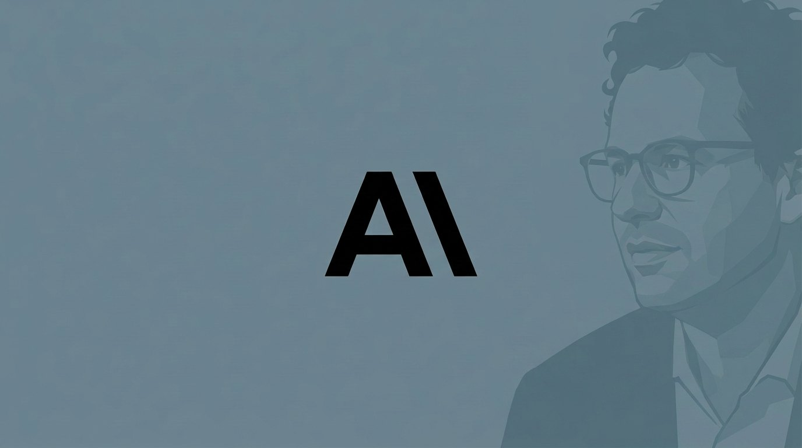

ChatGPT、Claude、Cursor、Midjourney… 主流 AI 工具的横向对比与深度评测。
Anthropic 在旧金山投资者日交出 Q3 成绩单：营收 168 亿美元、环比增长 45%，调整后营业利润率 11%，现金流为正，每 1 美元算力支出换回 1.70 美元收入。但增速从 Q2 的 140% 掉到 45%，公司又没披露 9 月年化收入运行率和全年指引，路透社援引四名知情人士称，部分投资者正推动11 月 IPO 估值从 2 万亿美元下调到 1.5 万亿以下，CoreWeave 当日股债双杀。
看今日完整快报 →
ChatGPT · Claude · Kimi · DeepSeek · Gemini
5 款工具对比 →Midjourney · DALL·E 3 · SD · Firefly · Recraft
5 款工具对比 →Cursor · Copilot · Windsurf · Codex · Claude Code
5 款工具对比 →Runway · Pika · Kling · Vidu
4 款工具对比 →ElevenLabs · Fish Audio · CosyVoice · Azure · OpenAI
5 款工具对比 →ChatGPT vs Claude 深度横评
阅读 →Cursor、Copilot、Windsurf、Codex CLI、Claude Code 全面对比。包含 12 个 FAQ、11 种场景决策矩阵和真实编码实战案例。
ElevenLabs、Fish Audio、CosyVoice、Azure TTS、OpenAI TTS 对比。包含盲听测试、方言专项评测和 9 场景决策矩阵。